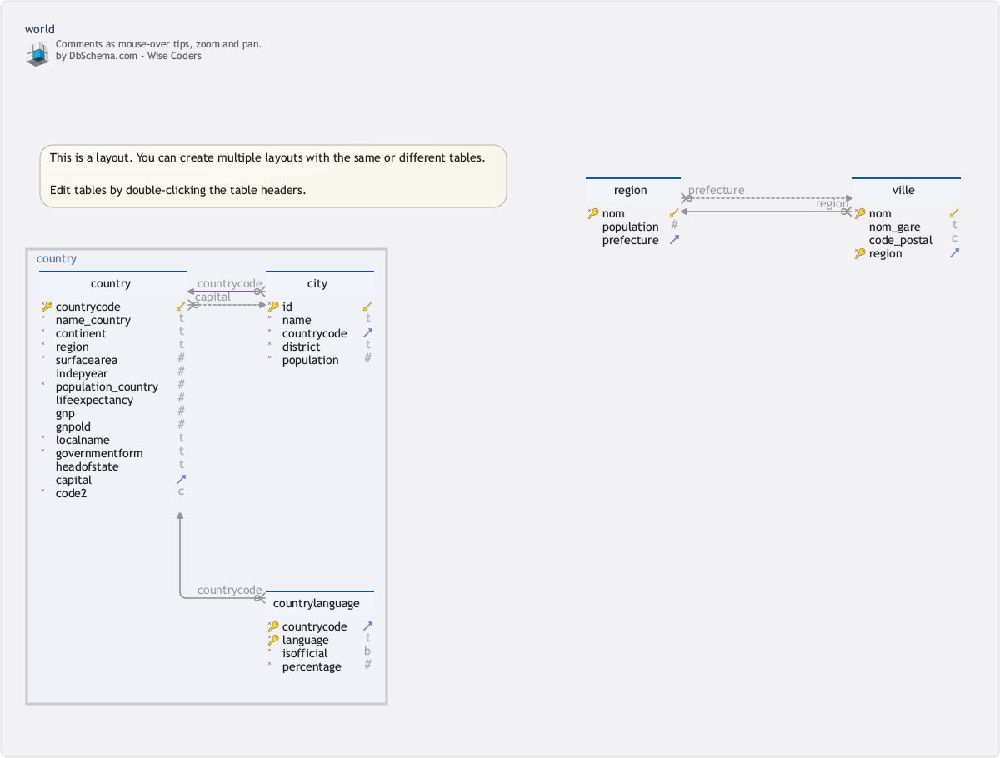

BD I: Introduction aux SGBD
Bases de Données Licences MIASHS et Mathématiques
Université Paris Cité
2024-09-13
Données ?
Situation du cours Bases de Données (MA15Y030) dans la Licence MIASHS
- Troisième cours tourné vers l’informatique
- Initiation (L1, S1)
- Algorithmes et Programmation (L2, S3)
- Un cours tourné vers les données avant Science des Données (L3, S6)
Le déluge des données : une mode ?
Rien de neuf sous le soleil …
De qui sont ces lignes ? Quand furent-elles écrites ?
Les données intéressent
les sciences
les administrations
les entreprises
les citoyennes (et les citoyens)
…
Les données en Sciences Sociales
Pourquoi ?
De quoi sont faites les données ?
Comment les accumuler ?
Comment les interroger ?
Comment les conserver ? les éditer ?

Sources et usages des données
Quelques références

Quantitative tour at social sciences edited by Gelman and Cortina, 2009
Quelques problèmes
Constitution (archivage, etc)
Acquisition/organisation
Usage(s)
Maintenance
Les données de l’entreprise/des administrations
La comptabilité
Les stocks (ERP)
La clientèle (CRM)
…

La vie des données (en résumé)
Saisie/Alimentation
Traitement(s)
Usage(s)
Archivage
Maintenance
Avant-hier
Les entreprises et les administrations ont toujours cultivé une mémoire sous forme de fichiers plus ou moins mécanisés et formattés.
Ces collections de fichiers mécanisées répondaient à des exigences de fiabilité, de convenance (facilité de la recherche, de la maintenance)
Aujourd’hui
Explosion des volumes
Explosion des débits
Usages (très) divers

Systèmes d’information
Systèmes d’information
Un système d’information (SI) est un ensemble de composants qui fonctionnent ensemble pour collecter, traiter, stocker et diffuser des informations.
Les systèmes d’information ont des objectifs (très) divers.
Par exemple : les systèmes de traitement des transactions (TPS), les systèmes d’information de gestion (MIS), les systèmes d’aide à la décision (DSS) et les systèmes de planification des ressources de l’entreprise (ERP).
Décomposition des SI
Un système d’information comprend en général les éléments suivants:
Matériel informatique (ou pas) : dispositifs physiques utilisés pour collecter, stocker et traiter l’information (ordinateurs, serveurs, stockage, réseau, …).
Logiciels : Les programmes exécutés sur le matériel pour gérer les données et effectuer des tâches spécifiques (OS, SGBD, Logiciels applicatifs).
Données
Personnes : Les usagers du système d’information
Processus : Les flux de travail et les règles régissant la manière dont les données sont collectées, traitées et distribuées, conformément aux objectifs.
Systèmes d’information (SI) et Bases de Données (BD, SGBD, SGBDR)
Au coeur des systèmes d’information (modernes) on trouve (presque toujours) les bases de données
Mise en garde
Toutes les bases de données ne sont pas relationnelles
Des propriétés désirables (ACID)
Atomicité
Chaque ajout/modification d’information doit former un tout cohérent
Si tout se passe correctement, les actions de la transaction sont toutes validées, sinon on retourne à l’état initial
Cohérence
Le contenu de la base de données doit rester conforme à des contraintes définies lors de la conception
Isolation
La bases de données doit pouvoir être utilisée concurremment par plusieurs usagers
Durabilité
La vie d’une base de données s’étale sur plusieurs dizaines d’années
Bases de données et (autres) logiciels
Bases de données
- Qu’est-ce que c’est (plus précisément) ?
Ce sont des logiciels intermédiaires (middleware) entre :
Systèmes de gestion de fichiers/Systèmes d’exploitation …
Applications (CRM, ERP, CMS, …) …
Les bases de données ne sont pas (simplement) un langage (comme JAVA, , )
Bases de données (relationnelles)
Mise en garde
Toutes les bases de données informatiques ne sont pas relationnelles
Les Bases de données relationnelles forment un sous-ensemble important (et même prépondérant) des systèmes de gestion des bases de données en entreprise
Les bases de données relationnelles ont été conçues pour traiter les données tabulaires (oragnisées en tables)
Collection de tables/data frames
Caricaturalement :
Une base de données relationnelle est une collection de tables
Les tables s’incarnent de plusieurs façons en informatique
R, Pandas, les tableurs (Excel …), offrent un environnement interactif de manipulation de données et un environnement de définition de données
Data frame
Un
dataframeest une liste de vecteurs (colonnes)Les vecteurs (colonnes) d’un
dataframesont tous de même longueurLes éléments d’un vecteur sont d’un même type de base
Chaque vecteur a un nom et son propre type
Autres environments (Excel, JAVA, Python)
Les
spreadsheetdes tableursLes
DataframesdePandasLes tableaux d’objets en
JAVA
permettent de représenter ce que les dataframes représentent en R
Les SGBD vont au delà :
Ils offrent:
Persistance
Entre deux sessions, les données sont confiées au système de fichiers de l’ordinateur
Intégrité
Les données confiées au système de fichiers ne peuvent pas être altérées par d’autres logiciels
Concurrence
Les données peuvent être manipulées/consultées/mises à jour de manière concurrente par plusieurs voire par une grande quantité d’ utilisateurs.
Usages
Sites web dynamiques
Logiciels personnels
Derrière certaines applications (gestion de photos, de carnet d’adresses, …), on trouve des bases de données légères (SQLITE)
Partout
smartphones, tablettes, …
web, réseaux sociaux
administrations (APOGEE, …)
entreprises (Stocks Supply Chain, Customer Relationship Management, …)
NSA
L’idée relationnelle
L’idée clé (Codd, 1970)
Organiser les informations en tables ou relations
Développer et formaliser un langage de manipulation de tables : l’algèbre relationnelle (langage SQL, Structured Query Language)
L’usager peut définir l’organisation des données
Il peut interroger celles-ci (par des requêtes)
Le langage est déclaratif :
- On décrit ce que l’on veut obtenir (quoi mais pas comment)
- Le système fait le reste…
L’évaluation de toutes les requêtes s’arrête (au moins en théorie : si on y met les moyens…)
L’algèbre relationnelle/SQL n’est pas un langage complet (différence avec
JAVA,C,Python, etc)
Codd’s Twelve Principles
- Information is represented logically in tables
- Data must be logically accessible by table, primary key, and column.
- Null values must be uniformly treated as “missing information,” not as empty strings, blanks, or zeros.
- Metadata (data about the database) must be stored in the database just as regular data is
- A single language must be able to define data, views, integrity constraints, authorization, transactions, and data manipulation
- Views must show the updates of their base tables and vice versa
- A single operation must be available to do each of the following operations: retrieve data, insert data, update data, or delete data
- Batch and end-user operations are logically separate from physical storage and access methods
- Batch and end-user operations can change the database schema without having to recreate it or the applications built upon it
- Integrity constraints must be available and stored in the metadata, not in an application program
- The data manipulation language of the relational system should not care where or how the physical data is distributed and should not require alteration if the physical data is centralized or distributed
- Any row processing done in the system must obey the same integrity rules and constraints that set-processing operations do
Quelques acteurs
PostGres (PostgreSQL)
Un serveur :
etu-pgsqlUn catalogue :
bd_2023-24Des schémas:
world, pagila, nycflights13, ...
Un exemple de schéma world
Un schema
Des schémas de table
continent: association nom de continent (texte)-code de continent (entier)country: chaque tuple porte sur un état/territoirecity: chaque tuple porte sur une ville (déisgnée parid) qui appartient à un état/territoire désigné parcountrycodecountrylanguage: chaque tuple indique la part de la population d’un état/territoire (désigné parcountrycode) qui parle/connaît une langue (désignée parlanguage) et précise si la langue est officielle dans cet état/territoire.
Détails du schema world

Quelques questions et propriétés typiques
Extraire de l’information
Assurer de la cohérence après modification
- Faire en sorte que chaque état/territoire soit identifié par un numéro unique
- Faire en sorte que chaque ville soit identifiée par un numéro unique
- Ne pas proposer de données sur des villes/territoires/états qui n’existent pas
Propager l’information
- Historiciser le schéma
Objectifs du cours
Compétences d’un usager de BD relationnelles
Exprimer des requêtes en algèbre relationnelle et en SQL
SQL Définition, manipulation et contrôle des données
Concevoir un Modèle Conceptuel de Données (Entités/Associations)
Déterminer les dépendances fonctionnelles et normaliser une relation
Plan du cours
Algèbre et calcul relationnels
SQL (algèbre relationnelle stricte)
SQL sous-requêtes
SQL agrégation
SQL requêtes paramétrées
Définition de données/Conception
Normalisation
Autour des bases de données
Entrepôts de données (Fin des années 1980)
Datawarehouse
Un Data Warehouse est une technologie qui regroupe des données structurées provenant d’une ou de plusieurs sources afin qu’elles puissent être comparées et analysées.
Lacs de données (2010)
Datalake
Le concept de Data Lake a été évoqué pour la première fois, en 2010, par James Dixon, comme une solution pour le stockage de données sans pré-traitement et sans connaître précisément l’usage futur qui en sera fait. L’image du lac, permettant d’expliquer, que différentes sources peuvent l’alimenter de manière naturelle et brute, et que les utilisateurs peuvent y plonger pour l’explorer et en rapporter des échantillons à examiner
Au delà du relationnel: No SQL
Ce sont les grandes entreprises du web qui ont été les premières confrontées aux limitations intrinsèques des SGBD relationnels traditionnels. Ces systèmes fondés sur une application stricte des propriétés ACID et généralement conçus pour fonctionner sur des ordinateurs uniques ont rapidement posé des problèmes d’extensibilité.
Afin de répondre à ces limites, ces entreprises ont commencé à développer leurs propres systèmes de gestion de bases de données pouvant fonctionner sur des architectures matérielles distribuées et permettant de traiter des volumes de données importants.
Les systèmes propriétaires qui en ont résulté, Google (BigTable), Amazon (Dynamo (en)), LinkedIn (Voldemort), Facebook (Cassandra puis HBase), SourceForge.net (MongoDB), Ubuntu One (CouchDB), Baidu (Hypertable) ont été les précurseurs du modèle NoSQL.
Les performances restent bonnes avec la montée en charge en multipliant simplement le nombre de serveurs, solution raisonnable avec la baisse des coûts, en particulier si les revenus croissent en même temps que l’activité. Les systèmes géants sont les premiers concernés : énormes quantités de données, structuration relationnelle faible (ou de moindre importance que la capacité d’accès très rapide, quitte à multiplier les serveurs).
Un modèle typique en NoSQL est le système clé-valeur, avec une base de données pouvant se résumer topologiquement à un simple tableau associatif unidimensionnel avec des millions — voire des milliards — d’entrées. Parmi les applications typiques, on retrouve des analyses temps-réel, statistiques, du stockage de logs (journaux), etc.
Lire plus
Guy Harrison. Next Generation Databases. NoSQL, NewSQL, Big Data
The End
MA15Y030 – Bases de Données – L3 MIASHS – UParis Cité
Les Bases de Données : survol